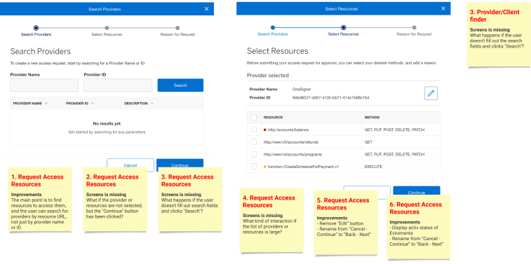

AMERICAN EXPRESS
One Identity Authorization Portal
The goal of this project is to enable third-party developers to create applications using the American Express API with the minimum number of permissions required, while still obtaining approval from American Express users. To achieve this goal, our team has developed a self-management permissions portal for API developers, a user permissions consent screen for American Express IDP, and all the necessary backends and APIs to support these features. This will provide a secure and transparent way for Amex users to grant permissions to third-party applications, while giving developers the necessary tools to implement their applications effectively. Essentially, the project focuses on optimizing the balance between providing access to necessary data and ensuring user privacy and security.
PROJECT RESPONSIBILITIES
As part of project team I played a key role in the strategic release planning for the project, working with the development team and stakeholders to identify potential issues and develop strategies to mitigate them to ensure that the application was launched in a timely and effective manner. My work as a UX designer was critical to the success of the project, ensuring that it met the needs of the users and the business, while also delivering a high-quality user experience.
Discover needs
One of the priorities was to gather requirements, which included determining the key goals and objectives of the project, as well as the needs and preferences of users.
Developing strategy
I was responsible for defining the interaction flows for the application, which involved mapping out the different screens and user actions required to achieve the desired outcomes. I also created a backlog of features and functionality, which helped to prioritize the work and ensure that the most important tasks were completed first.

Build relationship
I conducted interviews with stakeholders to gain a deeper understanding of their needs and expectations, which helped to inform your designs and recommendations. I also facilitated workshops to bring together different perspectives and ideas, and to ensure that everyone was aligned on the project goals and objectives.

Design delivery
I delivered high-fidelity prototyping and interactive designs that could be tested and refined with users. I also worked closely with developers to ensure that the designs were feasible and could be implemented effectively.

LEADERSHIP
Also as the UX designer on this project, I was responsible for a wide range of important tasks and activities, all of which were aimed at ensuring that the project met the needs of both the end-users and the business.
Driving design processes
I was responsible for leading the design process and ensuring that it aligns with the project's goals and objectives. This involved collaborating with stakeholders, conducting research, developing design concepts, and iterating on those designs based on feedback.
Task priorities
Within the project, I prioritized the tasks and deliverables to ensure that the project is on track and that the most important features are delivered first. This involved working closely with project managers and other team members to understand the project scope, timelines, and resource constraints.
Managing implementation risks
As part of my activities I needed to anticipate and manage the risks associated with implementing project. This involved understanding technical limitations, identifying potential issues early on, and working with developers to find solutions that meet the project's goals while minimizing risks.
Strategic planning
The most important thing for me was to develop strategic thinking skills to understand how project fit into the larger business strategy. This involved working with stakeholders to understand their needs and goals, identifying opportunities for innovation, and developing design solutions that support the project's strategic objectives.
We created a cross-platform environment, a portal where any vendor or internal developer can quickly and easily request access to data and test their programs in a secure development environment. - 600+ dev stories covered - 50+ features delivered - 30+ сonducted interviews and surveys - Successfully released in production - Got a good feedback from the Product Owner
- Banking
- Finance
- Security & identity
- Development
Domain
- 13 mounth
Length
- 3 designers
- 8 front-end developers
- 4 back-end developers
- 2 QA engineers
- 2 Project managers
- 1 Delivery manager
Team
- Key experience designer
Project role